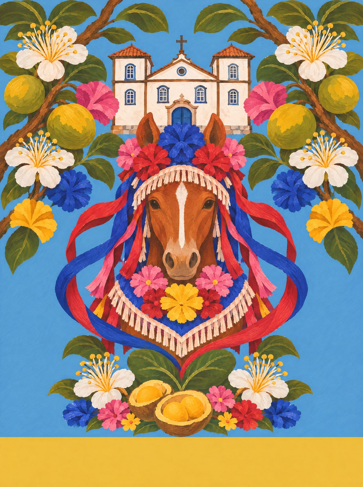
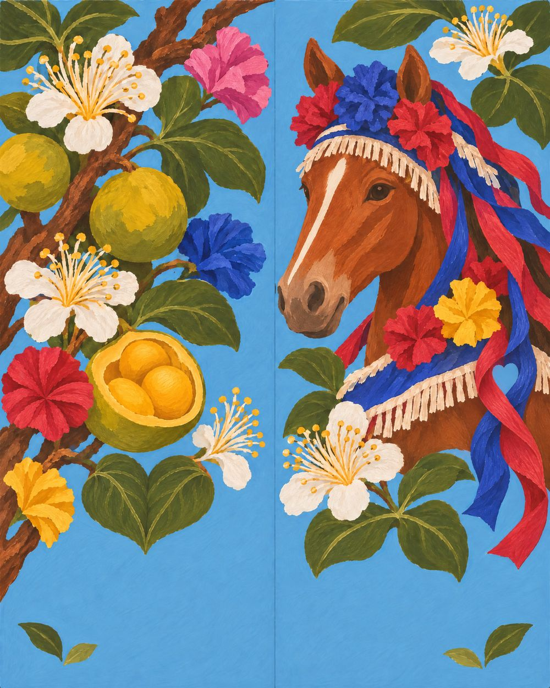
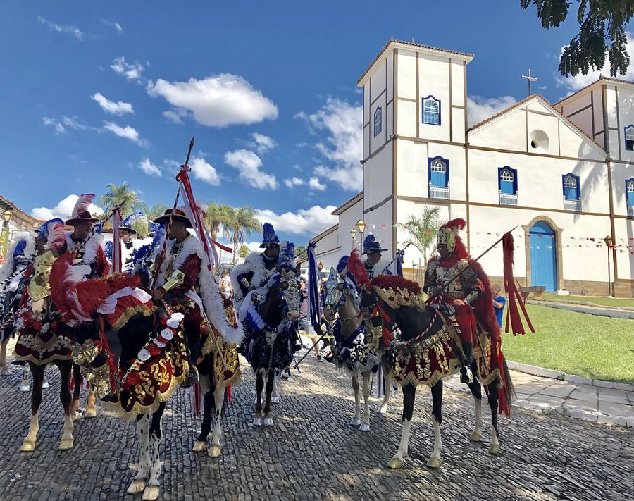

Goiás
Cavalhada
As Cavalhadas de Pirenópolis, quando os cavalos saem enfeitados de flor de papel e fita, com o pequi do cerrado em volta.
11 / 14 · Centro-Oeste

o coração
Encontre o coração
Ele não está desenhado em cima de nada. Aparece quando os próprios elementos da cena se encontram. Procure na ilustração e toque nele.
♥ duas folhas de pequi que se encontram sob o peito do cavalo


o par
Dois pés, uma história
na palmilha
pé esquerdo com o galho de pequi, frutos e flores de papel; pé direito com a cabeça do cavalo enfeitado de fita azul e vermelha.
borracha e tira
azul do céu do cerrado; tira azul-cristão.
a arte da palmilha
Em díptico

caderno de campo
Em Pirenópolis, maio é tempo de Festa do Divino: as Cavalhadas encenam a batalha de mouros e cristãos, vermelho contra azul, e os mascarados invadem a rua a cavalo com máscaras de boi enfeitadas de flores de papel, fitas e brilho, fazendo o “curucucu”. Na Cidade de Goiás, o casario baixo à beira do Rio Vermelho guarda a casa de Cora Coralina e seus doces. E em toda cozinha goiana tem pequi, amarelo e perfumado, que se come com cuidado por causa dos espinhos.
trilha · o “curucucu” dos mascarados · a banda de música na Festa do Divino · moda de viola
A âncora: o cavalo enfeitado das Cavalhadas de Pirenópolis.
pesquisa de campo
Na rua, antes do desenho



campanha
O par no lugar


fotos de campo deste estado
 ← Mato Grosso do Sul
← Mato Grosso do Sul